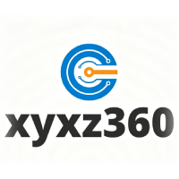
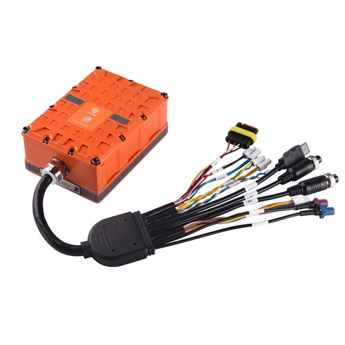
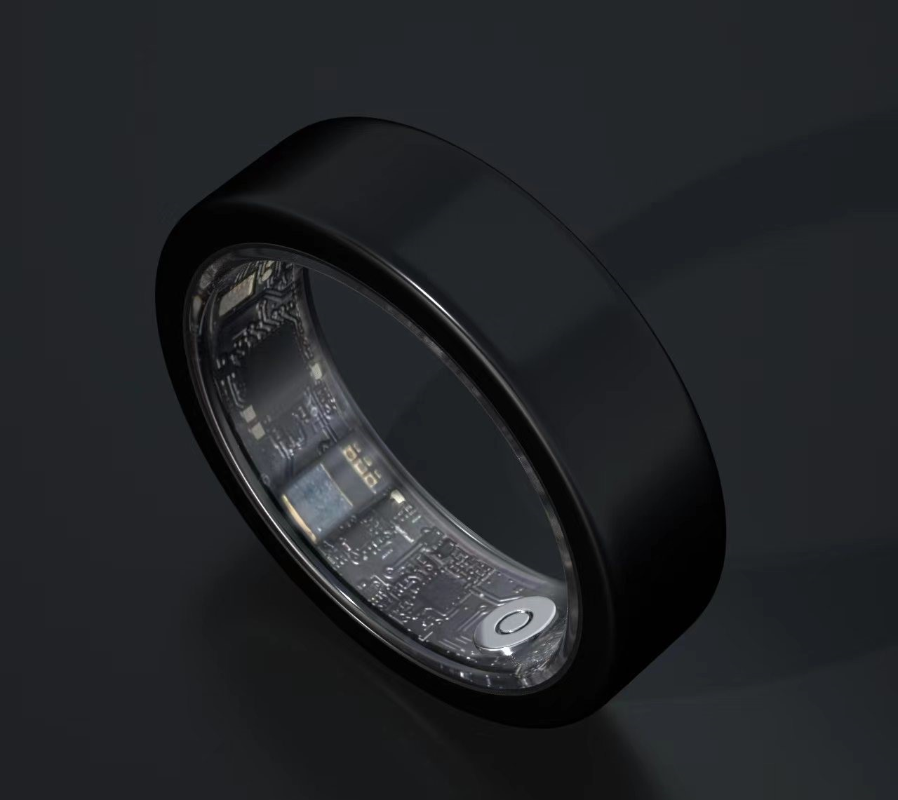
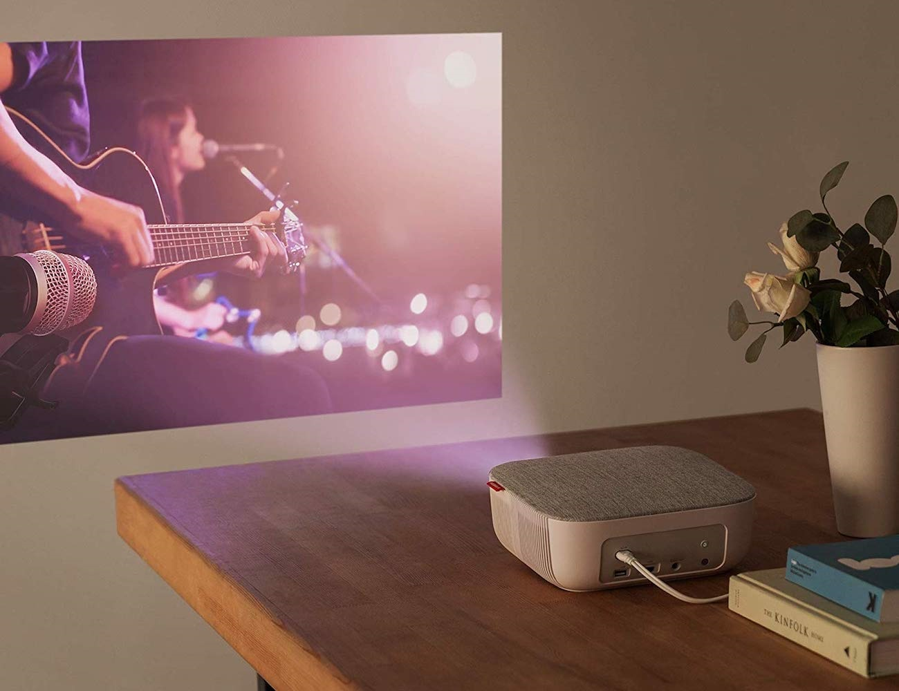
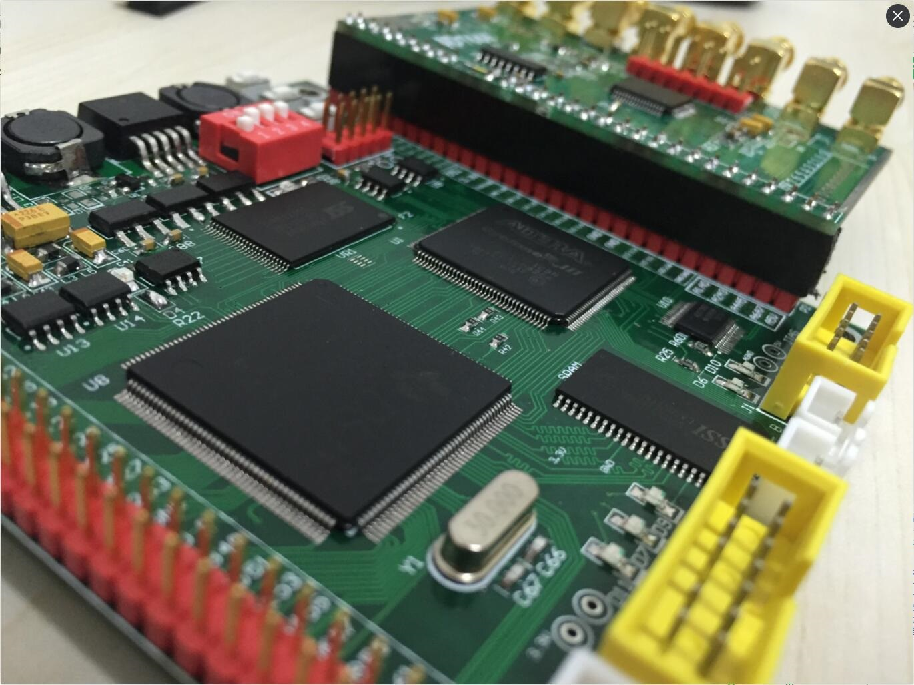
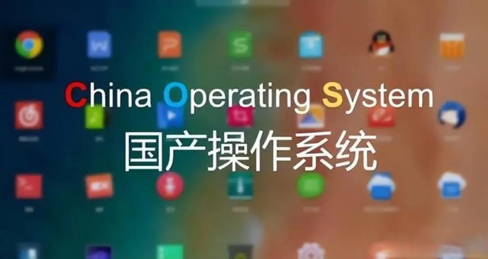
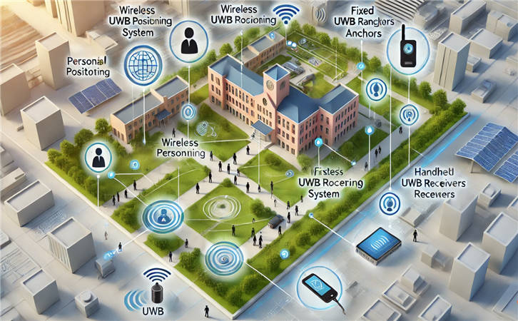
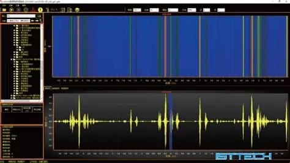

AI硬件
AI智能玩具
围绕儿童陪伴与情感交互场景，打造具备语音对话、触摸反馈、表情表达与个性化陪伴能力的智能玩具。项目从硬件结构设计、嵌入式系统开发，到大模型 Agent 能力接入与产品级交付，形成一套完整的智能终端解决方案。
在交付过程中，团队同时负责系统稳定性优化、低功耗设计与用户体验迭代，确保产品在小批量生产阶段即可稳定运行，现已进入量产准备阶段。
硬件设计 / 嵌入式开发 / 大模型 Agent / 产品级交付
北京轩宇芯智科技有限公司 合作案例与交付能力案例展示
从智能硬件、嵌入式系统到大模型与后台平台，助力客户完成从原型到量产的完整升级。
围绕儿童陪伴与情感交互场景，打造具备语音对话、触摸反馈、表情表达与个性化陪伴能力的智能玩具。项目从硬件结构设计、嵌入式系统开发，到大模型 Agent 能力接入与产品级交付，形成一套完整的智能终端解决方案。
在交付过程中，团队同时负责系统稳定性优化、低功耗设计与用户体验迭代，确保产品在小批量生产阶段即可稳定运行，现已进入量产准备阶段。
硬件设计 / 嵌入式开发 / 大模型 Agent / 产品级交付
基于自动驾驶国标 GB44497-2024，依托车规级平台完成 DSSAD 驾驶数据记录系统研发，覆盖数据采集、事件记录、存储管理与上位机可视化展示等全链路能力。
项目将硬件设备、嵌入式软件与上位机界面统一打通，满足国标要求并完成小批量试产，现已与东风某车型开展集成测试。
车规平台 / 软硬件集成 / 国标符合 / 小批量试产
面向健康监测与生理数据采集场景，开发一款可连续监测五大指标的智能穿戴戒指。项目覆盖传感器方案设计、低功耗嵌入式开发、手机端应用、后台管理平台及产品级交付流程。
项目已完成从原型验证到小规模发货的完整闭环，体现了公司在硬件设计、软件联调与产业化落地上的整体能力。
硬件开发 / 嵌入式 / APP / 后台系统
针对投影仪新品升级需求，基于 RK3399 平台完成 Android 系统架构迁移与定制开发，覆盖 BSP 系统适配、HDMI 输入输出、FPGA 控制驱动封装，以及 Launcher 与 Setting 等应用层功能开发。
该项目体现了公司在跨系统移植、硬件接口封装与交互软件集成上的综合能力，最终与客户共同完成新品交付。
Android ROM / BSP / HDMI / FPGA 控制 / Launcher为多目摄像头产品提供高性能视频处理方案，基于 RK3588 平台实现 8 路 4K 视频解码、8 路 4K 输出渲染与视频编码能力，并提供标准 ffmpeg 接口与稳定性测试程序。
该方案为甲方业务系统提供了可靠的底层能力基础，显著降低了后续功能开发难度，具备强扩展性与高可维护性。
RK3588 / ffmpeg / Vulkan / 稳定性测试
围绕行业算法加速场景，完成 DSP 与 FPGA 的协同设计与系统集成，构建一套面向统一调用接口的高性能加速服务器方案。项目包括算法并行优化、TI CC6678 DSP 开发、Xilinx XC7VX690T FPGA 开发与飞腾 D2000 软件开发。
交付内容包含定制化服务器与加速卡，帮助客户将复杂算法能力高效封装为对外接口，提升整体性能与部署便捷性。
DSP / FPGA / 算法并行优化 / 统一接口
针对无人机产品的国产化升级需求，完成了硬件设计开发、BSP 驱动开发与调试，并将系统成功移植到统信 UOS 平台。项目重点在于保证底层接口稳定、系统兼容性强且便于后续业务功能扩展。
客户可基于该平台继续开发其核心业务逻辑，形成高效的国产化产品交付路径。
硬件开发 / 驱动调试 / 国产系统移植
基于 GPS + 北斗融合定位能力，完成高精度定位算法、轨迹记录与导出软件开发，打造一套可在真实环境中部署使用的定位终端解决方案。
项目贯穿整个产品生命周期，从研发到小批量生产、现场部署测试与验收，展现了公司在复杂环境下的工程交付能力。
定位算法 / 现场部署 / 小量生产 / 验收
针对传统单片机平台产品升级需求，完成从旧架构到 Linux + QT 平台的整体迁移，并新增网线测距、光纤衰减等测试子模块，提升产品功能完整度与操作体验。
项目提供硬件 PCB 设计与软件镜像交付，形成较完整的产品升级方案，为客户后续量产与迭代提供支撑。
硬件 PCB / Linux / QT / 测试模块
面向超声波设备实时成像与高精度数据采集场景，开发复杂度较高的 Windows GUI 上位机软件，支持实时成像显示、数据流持续采集与大数据量传输。
该项目已经成为成熟交付产品，体现了团队在高频实时处理、用户界面交互与工业稳定性的综合能力。
Windows GUI / 实时成像 / 大数据传输基于高通硬件平台，完成 YOLO 目标检测与人脸识别应用开发，同时部署本地化大模型能力，支持内网穿透与智能交互场景应用。项目不仅提供前后端产品交付，也实现了算法与终端设备的深度融合。
该项目体现了公司在端侧智能感知、边缘计算与大模型落地方面的综合研发能力。
AI视觉 / 大模型 / 本地化部署 / 内网穿透
为中外建金融提供 P2P 理财投资系统的整体解决方案，涵盖手机客户端、Web 管理后台与后端系统开发，并负责完整的 UI 设计、系统架构搭建与上线交付流程。
项目以用户体验、业务流程稳定性与系统安全性为核心，体现了公司在金融类业务场景下的产品研发与平台建设能力。
P2P 理财 / APP / 后台系统 / 上线交付